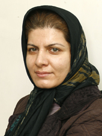

پذيرش > سایت نوشته ها > مرگ را به این قوانین ترجیح می دهم/دلبر توکلی ، کانون زنان ایرانی


 مرگ را به این قوانین ترجیح می دهم/دلبر توکلی ، کانون زنان ایرانی مرگ را به این قوانین ترجیح می دهم/دلبر توکلی ، کانون زنان ایرانی
13 بهمن 1386 - - نسخه قابل چاپ
انگشت سبابه اش را بالامي برد واين جمله تا ريخي را تكرارمي كند:"طلاقت نمي دهم ،آنقدر بمان تا موهايت مثل دندان هايت سفيد شود." وسط راهروي دادگاه خانواده مات و مبهوت مانده ام. قاضي ،تاريخ دادگاه بعدي رابراي شش ماه بعد اعلام كرده است. يكي از دوستانم كه به عنوان شاهد در دادگاه همراهي ام مي كرد، گوشه لباسم را مي كشد . به خودم مي آيم.
باورم نمي شود ،به خاطر شاغل بودنم بايد 20 درصد از مبلغ كل مهريه را به صندوق دادگاه واريز كنم تا اولين جلسه رسيدگي به دادخواست مهريه تشكيل شود. منشي دادگاه مي گويد:" تشكيل جلسه دادرسي دليل بر وصول مهريه تان نيست چون همسرتان هيچ ملك ودارايي به نام خودش ندارد و به احتمال زياد در نهايت دادگاه پرداخت مهريه را قسطي مي كند."
پس او راه هاي گريز قانون را به خوبي مي داند كه تهديد مي كند.با اين حساب هيچ ضمانت اجرايي براي پرداخت اقساط تعيين شده هم وجود ندارد. همان طور كه دادگاه، نفقه تعيين كرد واو به راحتي از پرداختن سر باز زد و هيچ اتفاقي هم نيافتاد.
يكسال و نيم سرگرداني ام بي نتيجه ماند .او به راحتي به زندگي خود با معشوقه اش ادامه مي دهد اما من براي انجام بسياري از كارها يم نياز به اجازه و رضايت همسر دارم.
جملاتي كه به وكيلش گفته بود به سرعت از ذهنم گذشت.خانمي ميان سال بود باچهره اي جدي.وقتي وارد دفتر وكالتش شدم،پيش ازاين كه چيزي بگويد مي گويم :" آنچه مرا مجاب کرد به اینجا بیایم جنسيت شما بود ويافتن پاسخ اين سوالم كه اگر من به جاي همسرم خانه را ترك مي كردم و ماه ها با معشوق ام در جاي ديگري به زندگي مشغول بودم ،جامعه چه لقبي به من مي داد .آيا در آن صورت شما حاضر بوديد وكالت مرا عهده دار شويد؟"
وقتي دفتروكالتش را ترك كردم هوا تاريك بود،پاسخ ام را در سكوت كشدار او يافتم.
شش ماه ديگر سرگرداني برايم كشنده بود.چيزي در ذهنم جرقه زد.جلودارخودم نبودم،پله ها را دوتا يكي بالا رفتم. خودم را پشت در اتاق رييس دادگاه خانواه ميدان ونك ديدم .سربازي كه دم در اتاق ايستاده نمي تواند مانع ورودم به اتاق بشود. فريادفروخورده اي كه ماهها در راهروي دادگاه در گلو نگه داشته ام بيرون مي جهد ،به پنجره اي كه به ميدان ونك ختم مي شود اشاره مي كنم و مي گويم :"اگر امروز حكم طلاقم صادر نشود خودم را پرت مي كنم پايين ،مرگ را به تن دادن به اين قوانين ترجيح مي دهم."
رييس مجتمع با تعجب نگاه مي كند و هيچ ترديدي در چهره ام نمي بيند. مرابه آرامش دعوت مي كند.اين بار هم حرفه روزنامه نگاري به كمكم مي آيد،وقتي متوجه مي شود روزنامه نگارم با قاضي شعبه( ...) تماس مي گيرد و مي گويد:" حكم طلاق خلعي ،خانمي را كه مي آيد پايين صادر كنيد."
كساني كه پله هاي محضررا -كه در چند قدمي دادگاه خانواده ميدان ونك قرار دارد- بالا مي روند ديگر حرفي براي گفتن به هم ندارند .اينجا آخر خط زندگي مشترك است. محضر دارنگاهي به مهر ي كه هنوز خشك نشده است مي اندازد و رو به من مي گويد:"جمله اي را كه زير شيشه ميز است بنويسيد."
با خطي كج و معوج نوشته شده است:"من در پاكي كامل به سر مي برم."
اولش نمي فهمم يعني چه ؟خانم بغل دستي كه علامت سوال را در چهره ام مي بيند برايم توضيح مي دهد كه خانم ها هنگام طلاق نبايد در دوران زنانگي ماهانه باشند ،در غير اين صورت صيغه طلاق جاري نمي شود.
محضردار جواب اين سوالم رانمي دهد:"اگر مردي كه در اينجاست نا پاك باشد مشكلي ندارد؟"
به هر حال اينطور بود كه مهرم حلال و جانم آزاد شد.
...ماهها گذشت وقتي شماره اش را روي تلفنم ديدم نمي خواستم جواب بدهم.سعي كردم او راببخشم.گفت مي خواهد مرا ببيند.بايد موضوع مهمي را بگويد.با كمي ترديد پذيرفتم.
نمي دانم تا به حال چند بار دور ميدان وايعصر دور زدم اما اين بار ميدان وليعصر با سرعت زيادي دور سرم مي چرخد.باور آنچه شنيدم غيرممكن است.روبه رويم نشست و بعد از كمي صغري ،كبري چيدن گفت:"يكي از شاگردانم كه با يك دكتر ازدواج كرده بود عاشقم شد ،من هم از او خوشم مي آمد. با اينكه يك سال ازدواج اش گذشته بود ،طلاق گرفت .دختر يكي از (...) است.پدرش برايش خانه خريده بود.وقتي خانه را ترك كردم به خانه او رفتم . مي خواستم بعد از طلاق با او ازدواج كنم ..خانواده اش از روابط ما با خبر بودند.وقتي مهريه ات را به اجرا گذاشتي تصميم داشتم درخواست ازدواج مجدد به دادگاه بدهم .در آن صورت تو همچنان بايد در راهروهاي دادگاه عمرت را سر مي كردي و من به زندگي خودم ادامه مي دادم.اما با بخشيدن مهريه و ساير حقوق قانوني ات كارم را ساده كردي.
يك روز رفتم خانه و او را با مرد ديگري ديدم .درگيري مان اوج گرفت.چاقو را برداشتم ،واقعا مي خواستم سرش راببرم ،اما به روش سنتي خودمان عمل كردم و گيس هايش رابرديم.بعد توي يك قوطي با خودم به دانشگاه بردم و به كساني كه در جريان رابطه ما بودند نشان دادم و گفتم :"اوگيس بريده است."
حالا آمدم تا مراببخشي .دست به هر چه ميزنم سياه مي شود.چهره ات همه جا بامن است.
خشكم زده بود.نمي توانستم روي صندلي جا به جا بشوم.سعي كردم به خودم مسلط باشم.گفتم:"اگر بخواهم به عنوان همسر سابقم به تو و گفته هايت توجه كنم دلم مي خواهد سقف اينجا در اين لحظه فرو بريزد اما ترجيح مي دهم اينطور فكر كنم كه درد دل يك دوست قديمي را شنيدم و برايت بسيار متاسف شدم."
درراه بازگشت به خانه خاطرات تلخ و شيرين 9 سال زندگي مشترك بدون توقف در هيچ ايستگاهي از ذهنم عبور كرد.كليد را در قفل در چرخاندم ،اينجا اول خط است.
کانون زنان ایرانی
ارسال به
بالاترین
،
توییتر
،
فریندفید
،
فیسبوک
در همين بخش :
 یک خبر تلخ؟ یک قانونشکنی؟ یک تصمیم بخشنامهای جدید؟ یک خبر تلخ؟ یک قانونشکنی؟ یک تصمیم بخشنامهای جدید؟
چرا بایست به سکسوالیته پرداخت؟ / نفیسه آزاد
آزارجنسی خانگی؛ «قربانی» نه، «نجات یافته»
زنان، بزرگترین بازندگان بهار عرب
سانسور از دیدگاه جنسیتی/الهه امانی
ديگر بخش ها :
طرح یک میلیون امضا
|
مقالات
|
سایت نوشته ها
|
اخبار
|
گزارش كمپين
|
گفت و گو
|
علیه سکوت
|
كوچه به كوچه
|
نامه های شما
|
گزارش ویژه
|
گفتگو با اعضا
|
ویژه سالگرد کمپین
|
تصویر برابری
|
دل آرام علی
|
تریبون
|
مقالات
|
تاریخ شفاهی
|
خارج از چارچوب
|
کتابخانه
|
درباره کمپین
|
کمپین در شهرها
|
کمپین در بند
|
صدای تغییر
|
ویژه 22 خرداد
|
لایحه حمایت از خانواده
|
گالری
|
عشا مومنی
|
امیر یعقوبعلی
|
خدیجه مقدم
|
راحله عسگری زاده و نسیم خسروی
|
پروین اردلان،جلوه جواهری، مریم حسین خواه، ناهید کشاورز
|
زینب پیغمبرزاده
|
سعیده امین، سارا ایمانیان، محبوبه حسین زاده، ناهید کشاورز و همایون نامی
|
احترام شادفر
|
نسیم سرابندی زاده،فاطمه دهدشتی
|
وبلاگ مهمان
|
پرونده خرم آباد
|
دستگیری ها
|
مریم مالک
|
پرستو اللهیاری
|
مهرنوش اعتمادی
|
سمیه رشیدی
|
Other Languages
|
همراهان
|
«فراخوان کمپین ده روز با بهاره هدایت»
| English
|